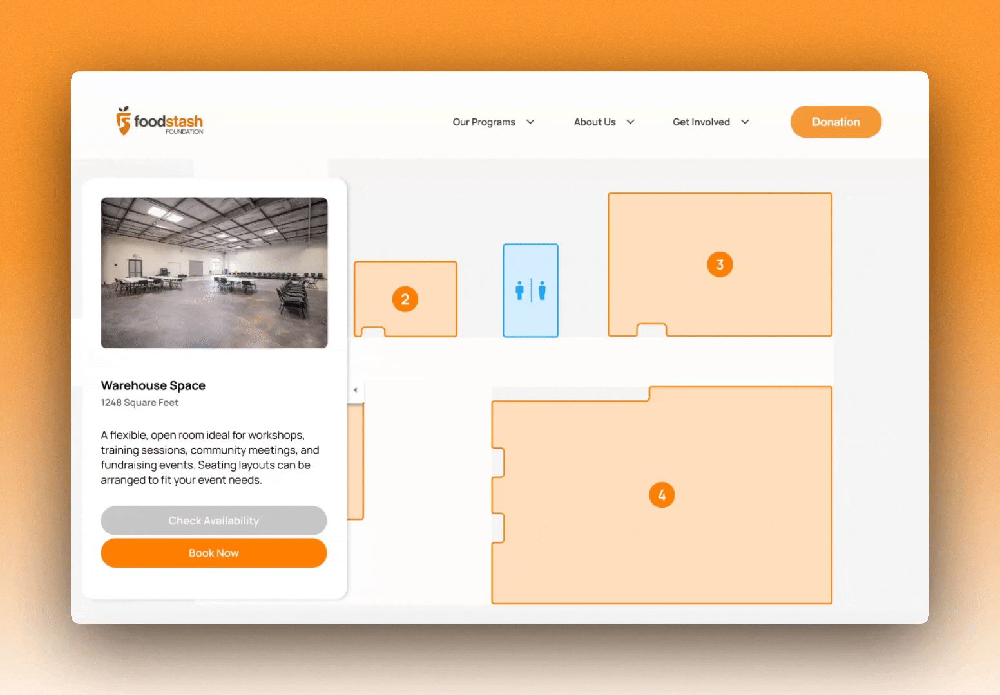
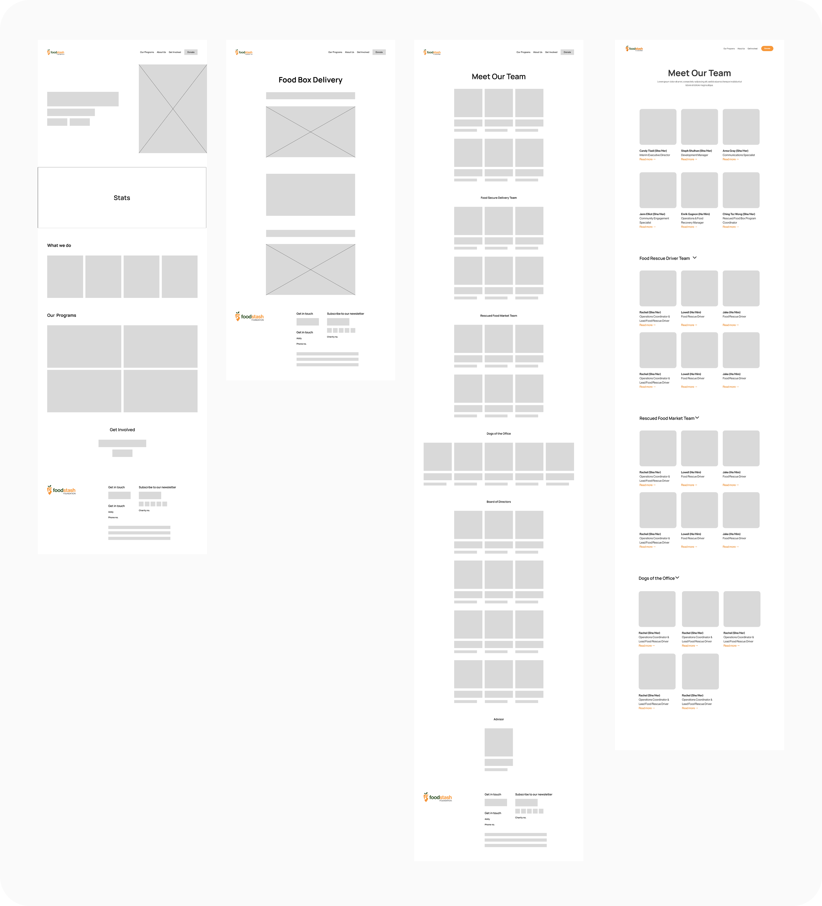

Food Stash Foundation

Food Stash Foundation is a Vancouver-based nonprofit dedicated to reducing food waste while providing dignified food access across the community.
Despite its strong community impact, the organization's website struggled to communicate how users could get involved. During the FLUI Hackathon 2026, we redesigned the experience to transform a visually cluttered and navigation-heavy platform into a clear, engaging system supporting events, volunteering, rentals and donations. I led the visual design and UI system, refining the platform's visual identity, layout, and hierarchy to create a more cohesive and action-oriented experience.
How might we design a clear and engaging platform that helps users understand Food Stash's impact and take meaningful action?


💬 Understanding the gap
Food Stash offers meaningful programs and initiatives, but the existing website made it difficult for users to understand what Food Stash offers and how to get involved. Through a website audit, stakeholder conversations, and a community partner interview, three experience gaps emerged.
Users struggled to determine where to go or what action to take.
Dense layouts made content difficult to scan and reduced engagement.
Key actions lacked visibility and emphasis.
💡 Our approach focused on three principles
Simplifying navigation by creating clear, action-based pathways across the platform.
Clear, thoughtful visuals that reflect on Food Stash's community impact.
Prioritize action by making key interactions visible, intuitive, and frictionless.
I developed a visual system designed to feel approachable and community-driven.
Color, type, and layout guide attention and reduce friction, prioritizing readability, scannability, and visual rhythm.
abcdefghijklmnopqrstuvwxyz
0123456789 !@#$%^&*()
abcdefghijklmnopqrstuvwxyz
0123456789 !@#$%^&*()
I refined the logo to improve legibility and balance across digital contexts.
Starting from basic carrot and leaf forms, the design explored how an "S" could be integrated into the shape.


Then I translated concepts into mid-fidelity mockups, iterating and refining them into polished high-fidelity designs.

The redesigned platform, ready for launch.
In less than 3 days, we recreated the website, added micro-interactions, and created the rental page to make it more visible. Try our prototype to see it in action (Press "R" to restart).
Watch the experience come to life.
👩🏻💻 What I've learned
Working on such a tight timeline taught me how important it is to manage my time well and focus on what really matters so I can still deliver quality work. It also showed me the value of staying organized early and making confident decisions to keep things moving forward.